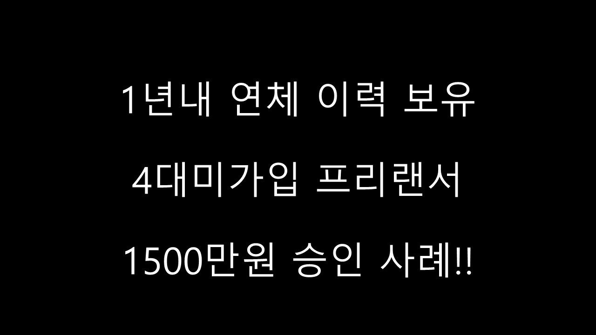
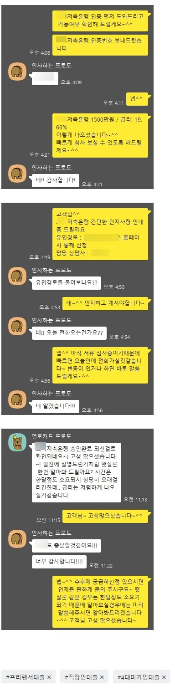

1년내 연체 이력보유 4대미가입 프리랜서 1500만원 승인사례

안녕하세요~ 뱅크앤론 이주연 상담사입니다~
오늘은 제가 진행해드렸던 전**고객님의 대출 사례를 소개해 드리겠습니다.
현 직장에서 1년째 근무중이시며, 연봉 2400만원이시고, 4대미가입 프리랜서 직장인이셨습니다.
사용중이신 대출로는 전세자금대출 1억천만원 있으셨습니다.
하지만, 최근 연체기록이 남아있으셔서 심사시 어려움이 있었습니다.
연체이력이 최근까지 있으셔서 나이스 682점으로 매우 낮으셨습니다.
**저축은행에서 1500만원.19.66% 가능하시다는 말씀 드렸고, 진행 도와드렸습니다.
필요하신 자금이 전액 해결 되어서, 고객님께서도 매우 만족하셨습니다.^^
자세한 사항은 아래 저와 고객님의 카톡 대화 내용을 참고하실수 있습니다. 감사합니다 ^^
